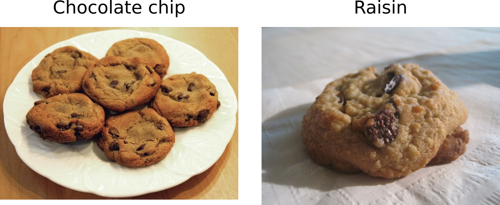

F is for F1 score
When we are training supervised learning models, we want to measure how well the model is performing. Choosing the correct metric for measuring model performance depends on what kind of task you are doing. There are two main categories of supervised learning tasks
- Classification: Here you are trying to predict which category (or categories) a piece of input data belongs to. For example, given an image you might try to predict if it is a picture of a dog or cat.
- Regression: Here you are trying to predict a numerical label. For example, you might try to predict the selling price of a house given some features about it, such as neighbourhood, number of bedrooms etc.
In this blog I’ll cover a couple of different methods for measuring model performance. First we’ll focus on classification tasks. To make this more concrete let’s imagine we are training a model to predict if a cookie contains either chocolate chips or raisins.

The problem with accuracy
One way of measuring model performance is called classification accuracy (more commonly referred to as accuracy). This is simply “how many predictions did you get correct out of how many predictions did you make?”. If you correctly predicted the type of cookie 95 times out of 100 predictions, your accuracy would be 95%. However, accuracy only works well if the number of items in each category is roughly equal. If there are many more items in some categories than others, we call this class imbalance. For example, chocolate chip cookies are much more popular than raisin cookies in general. If we assume out of 100 random cookies that 99 of them are chocolate chip, we could get 99% accuracy by guessing chocolate chip every single time. In practice this would be a pretty terrible model, but according to accuracy this is a good model.
Building a confusion matrix
If we want to try to address this problem we can try building a confusion matrix (which is less scary/confusing than it sounds). A confusion matrix shows all of the possible combinations of predictions vs the actual labels. We need to pick one category as the “positive class” and the other as the “negative class”. This is arbitrary, so let’s pick chocolate chips as the positive class, and raisin as the negative class. There is a sample confusion matrix shown below.
| Predicted: Chocolate chip | Predicted: Raisin | |
|---|---|---|
| Actual: Chocolate chip | 120 (True Positives) | 2 (False Negatives) |
| Actual: Raisin | 10 (False Positives) | 23 (True Negatives) |
I’m sure we’ve all had the experience of picking up what we thought was a chocolate chip cookie. Upon biting into it we realize “ugh, raisin”. Don’t get me wrong, I like raisin cookies but it is the mismatch between expectation and reality that is the problem. This mismatch is referred to as a false positive (FP) since we predicted the positive class, but it was actually the negative class. As you would expect, there are also false negatives (FN) where you predict raisin, but it’s actually chocolate chip. If the prediction matches the actual label, these are referred to as true positives (TP) or true negatives (TN).
Precision and recall
Precision and recall are ways of measuring classification quality.
Precision
\[ \text{Precision} = \frac{TP}{TP + FP}\]
This is the number of true positives, divided by all of the positive results predicted by the model. In our cookie example, this means “when you predicted chocolate chip, how likely was it to actually be chocolate chip?” If we look at the confusion matrix above, the precision would be
\[ \text{Precision} = \frac{120}{120 + 10} = 0.923\]
Recall
\[ \text{Recall}= \frac{TP}{TP + FN}\]
This is the number of true positives, divided by all of the points that should have been classified as positive. More concretely, this is “out of all of the chocolate chip cookies, how many did you find?”
\[ \text{Recall} = \frac{120}{120 + 2} = 0.984\]
F1 score
A model with high precision but low recall, returns few results but the predictions generally correspond to the actual labels. On the other side, a model with high recall but low precision returns many results, but most of the predictions are incorrect when compared to the labelled data. Obviously, we would like a model with both high precision and high recall. A metric called F1 score combines both precision and recall, and it is a common way to measure model performance
\[F1 = 2\frac{P \cdot R}{P+R}\]
An F1 score of 1.0 corresponds to perfect precision and recall and is close to zero for an extremely bad model. The F1 score is just one way of combining precision and recall, and there are other F measures which weight precision/recall differently.
Things to consider
In some problems, false positives are more important than false negatives. In others, the opposite is true. Imagine we are trying to predict if a patient has a certain disease or not. A false positive means we think they have the disease, but in actuality they are healthy. Depending on the side effects of treatment, a wrong prediction could have severe consequences. If there are major side effects to treating the disease, we may want to favour precision over recall. On the other hand, there may be cases where treating the disease has minor side effects, and leaving the disease untreated has major consequences. In this case we would want to favour recall, where we find as many instances of the disease as possible. This is obviously a complicated subject, and I highly recommend listening to this episode of the podcast linear digressions if you want to know more.
Regression
Now we’ll briefly talk about measuring the performance of regression models. Let’s imagine we have a model which predicts the selling price of a house based on it’s square footage. Here we don’t have a small number of categories (e.g. a house could sell for \(</span>503 200 or <span>\)632 777). Below I’ve plotted some fake data where the black points show the predicted price, and the blue points show the actual selling price. One way of measuring the amount of error is called Mean Absolute Error (MAE). This is simply adding up all the differences between the predicted and actual values (shown by the red lines) and dividing by the number of points. The absolute part of MAE just means that you take the absolute value of the differences. If you have one prediction which overestimates the price by \(</span>5000 and another which underestimates by <span>\)5000, the MAE is 10000 (not 0 where the two differences cancel out). A related metric is called Mean Squared Error (MSE) where you square the differences before adding them up. The reason for this that big differences will become even bigger. As an example, a difference of \(</span>2 will become 4 but a difference of <span>\)1000 will become 1000000.
Summary
When working on a supervised learning problem, choosing the correct metric is important. First you should think about if you are working on a classification or regression problem. Then you need to consider which metric best measures what you are trying to achieve. This is just a small summary of some of the ways of measuring model performance. For more info check out the links below or look at the description of cross-entropy loss in [“D is for deep learning”]((../2020-04-08-d-is-for-deep-learning/index.qmd).